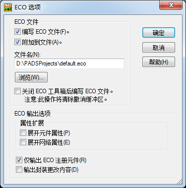
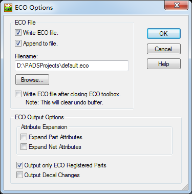

20160412
ECO工具栏(ECO Toolbar)
工程更改(Engineening Change Order)
>Tools / ECO选项(ECO Options)
 
在Layout修改后，再将ECO文件导入PADS Logic
PADS Logic / 文件(File) / 导入(Import)
") ECO工具栏(ECO Toolbar)
ECO工具栏(ECO Toolbar)